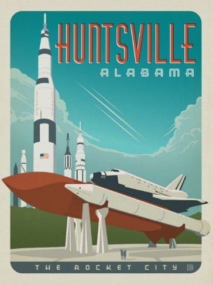

ABOUT ME
 Hi! I'm Sara Lenahan. I graduated with a Bachelor's in Psychology From the University of Alabama in Huntsville and am currently working towards a Master's in Human-Computer Interaction from DePaul University. Throughtout my undergraduate studies, I enjoyed working as a research assistant in an Industrtial/Organizational Psychology lab and a Cognitive Psychology lab. My perserverance asa a research assistant led me to many opportunities and travels. I've presented from Boston to Vancouver at the psychonomic Society Conferecnes and aroud the southern U.S. for the Southeastern Psychological Association annual meetings.